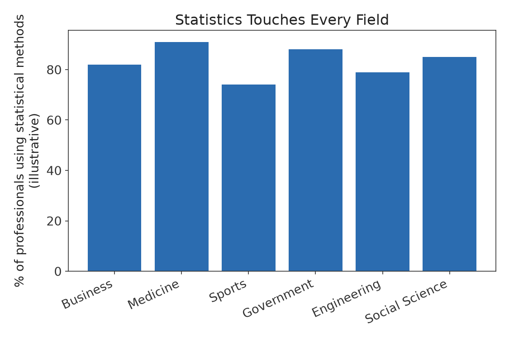

Part I · Descriptive Statistics & Exploratory Data Analysis · Chapter 1
What Is Statistics?
Every day, decisions are made under uncertainty: a doctor chooses a treatment based on clinical trial results, an engineer decides whether a batch of components meets tolerance, a company decides whether a new website design increases sales, and a government decides how to allocate resources based on a census. In each case, someone had to collect information, summarize it, and draw a conclusion that goes beyond the specific data in hand. That is the work of statistics: the science of collecting, organizing, analyzing, and interpreting data in order to make decisions and draw defensible conclusions in the presence of uncertainty.
This chapter introduces the vocabulary and the two broad branches of the subject — descriptive and inferential statistics — and works through the logic that connects a sample of data to a conclusion about a much larger population.
1.1 Why Study Statistics?
Statistics is not primarily about arithmetic. It is about reasoning carefully from limited, noisy information to conclusions that are useful and honest about their own uncertainty. A course in statistics teaches you to:
Summarize large amounts of data in a way that reveals patterns without distorting them.
Design studies and experiments that produce data capable of answering the question actually being asked.
Quantify how confident a conclusion should be, rather than treating every number as if it were exact.
Recognize when a data-based claim is being used to mislead, whether through a badly drawn graph, a biased sample, or a confusion of correlation with causation.

Figure 1.1 — Statistical reasoning is a general-purpose skill used across virtually every field that relies on data (illustrative figures).
1.2 Populations, Samples, and Why We Need Both
Definition
A population is the complete set of individuals, objects, or measurements that a study is meant to describe. A sample is a subset of the population that is actually observed and measured.
In principle, if you could measure every member of a population, you would never need inferential statistics — you could simply compute exactly what you want to know. In practice, populations are almost always too large, too expensive, too dangerous, or too dynamic to measure completely. A pharmaceutical company cannot give an experimental drug to every person who might ever take it; a factory cannot destructively test every lightbulb it manufactures to find out how long they last. Instead, we measure a sample and use it to make a statement about the population.
This move — from a sample to a population — is only valid if the sample is representative of the population. A large sample that is biased is often worse than a small sample that is representative, because a large biased sample creates false confidence. The famous example is the 1936 Literary Digest poll, which surveyed over two million people (an enormous sample) but drew its list of respondents from telephone directories and car registrations — a population skewed toward wealthier Americans during the Great Depression. The poll confidently predicted the wrong winner of the U.S. presidential election. Chapter 2 develops the sampling methods that are used to avoid this trap.
Example 1.1
A university wants to know the average number of hours its 30,000 undergraduates study per week. Surveying all 30,000 students is impractical. Instead, the registrar draws a random sample of 400 students and calculates their average study time. Here, the population is all 30,000 undergraduates, and the sample is the 400 students who were surveyed. The average computed from the 400 students is used to estimate the (unknown) average for all 30,000.
1.3 Descriptive Statistics vs. Inferential Statistics
The field divides naturally into two complementary branches.
Descriptive statistics
Descriptive statistics organizes, summarizes, and presents data so that its important features are easy to see. Computing an average, drawing a histogram, or reporting a percentage are all descriptive tasks. Descriptive statistics makes no claim about anything beyond the data actually collected — if you calculate the average height of the 30 students in your classroom, that number is simply a fact about those 30 students.
Inferential statistics
Inferential statistics uses a sample to draw conclusions, make predictions, or test claims about a population, and — critically — attaches a measure of confidence or uncertainty to those conclusions. Estimating the unemployment rate of a country from a labor force survey, testing whether a new drug lowers blood pressure more than a placebo, and predicting an election outcome from a poll are all inferential tasks. Chapters 13 onward are devoted to this branch.
Descriptive Statistics
Inferential Statistics
Summarizes the data you actually have
Generalizes beyond the data you have
No uncertainty to report — it is what it is
Always accompanied by a measure of uncertainty (a margin of error, a p-value, a confidence level)
Example: "In our sample, 62% of respondents preferred Brand A."
Example: "We are 95% confident that between 58% and 66% of all consumers prefer Brand A."
1.4 Variables and Their Roles
Definition
A variable is any characteristic that can be measured or recorded and that takes different values across individuals in a study.
Height, blood type, annual income, political party affiliation, and response time are all variables. Chapter 2 classifies variables in detail (categorical vs. numerical, discrete vs. continuous, and the four levels of measurement), because the type of variable determines which summaries, graphs, and statistical procedures are appropriate. Using a mean to summarize a categorical variable like "eye color," for instance, is meaningless — there is no such thing as the "average" eye color — while it is perfectly appropriate for a numerical variable like "resting heart rate."
Studies frequently distinguish an explanatory variable (also called an independent variable or predictor), which is thought to influence or explain, from a response variable (or dependent variable), which is the outcome being explained. In a study of exercise and blood pressure, hours of weekly exercise is the explanatory variable and blood pressure is the response variable.
1.5 The Statistical Process, Start to Finish
Most statistical work, whether a term project or a published clinical trial, follows the same broad arc:
Define the question. What population, and what characteristic of that population, do you actually want to know about?
Design the data collection. Decide how a sample will be drawn or an experiment will be run so the resulting data can actually answer the question (Chapter 2).
Collect the data. Execute the plan, keeping careful track of how each observation was obtained.
Describe the data. Summarize and visualize the sample (Chapters 3–6) to understand its center, spread, and shape, and to catch errors or surprises before moving on.
Model uncertainty. Use probability (Chapters 7–12) to describe how sample results would vary if the study were repeated.
Draw inferences. Use the tools of estimation and hypothesis testing (Chapters 13 onward) to generalize from the sample to the population, with an honest statement of uncertainty.
Communicate the conclusion, including its limitations, clearly and without overstatement (Chapter 28).
Common Pitfall
A statistical procedure cannot fix a bad question or bad data. If the sample is not representative of the population you care about, no amount of sophisticated analysis in later steps will make the conclusion valid. This is why Chapter 2, on data collection, comes before any calculation is introduced.
1.6 Statistics, Anecdotes, and "Common Sense"
Human intuition is a poor guide to phenomena that involve randomness, large numbers, or accumulated small effects, which is precisely the terrain statistics is built for. People systematically misjudge the likelihood of rare events, see patterns in random noise (the so-called "hot hand" and "gambler's fallacy" are both examples), and generalize too quickly from a small number of personal anecdotes. A single friend who smoked for 40 years without developing lung cancer is a real observation, but it says very little about the population-level relationship between smoking and lung cancer risk, which is established using data from hundreds of thousands of people. Learning to prefer systematically collected data and quantified uncertainty over anecdote and intuition is one of the most transferable skills this course teaches.
Chapter 1 Summary
Statistics is the science of collecting, summarizing, and drawing conclusions from data under uncertainty.
A population is the entire group of interest; a sample is the subset actually observed.
Descriptive statistics summarizes data in hand; inferential statistics generalizes from a sample to a population, with a stated level of uncertainty.
A variable is a measured characteristic; variables can play the role of explanatory (predictor) or response (outcome).
Good data collection is a prerequisite for valid conclusions — no analysis can repair a badly chosen sample.
Exercises
Explain, in your own words, the difference between a population and a sample. Give an example of each drawn from a topic that interests you.
A city wants to know the average commute time of its residents. It surveys 500 people who happen to be riding the city bus on a Tuesday morning. Identify the population, the sample, and explain why this sample might not be representative of the population.
Classify each of the following statements as descriptive or inferential:
"Of the 50 patients in this trial, 35 reported reduced symptoms."
"Based on this trial, we estimate that between 60% and 78% of all patients with this condition would experience reduced symptoms."
"The average test score in Ms. Ruiz's third-period class was 84.2."
"National test scores are projected to rise by roughly 2 points next year, based on this year's sample of districts."
For a study relating hours of sleep to reaction time in a driving simulator, identify the explanatory variable and the response variable.
Give an original example of a situation where anecdotal evidence ("this happened to someone I know") might lead to a conclusion that is contradicted by properly collected statistical data.
Selected Solutions
Exercise 2
Population: all residents of the city (or all commuters in the city). Sample: the 500 bus riders surveyed. The sample is likely unrepresentative because it systematically excludes people who commute by car, bike, or on foot, and because Tuesday-morning bus riders may have different commute times than the general population — this is a form of sampling bias called convenience sampling, discussed further in Chapter 2.
Exercise 3
(a) Descriptive — it reports a fact about the 50 patients actually studied. (b) Inferential — it generalizes to "all patients" with a stated range. (c) Descriptive — a fact about one specific class. (d) Inferential — a projection based on sample data, extended beyond the data in hand.
Exercise 4
Explanatory variable: hours of sleep. Response variable: reaction time in the simulator.